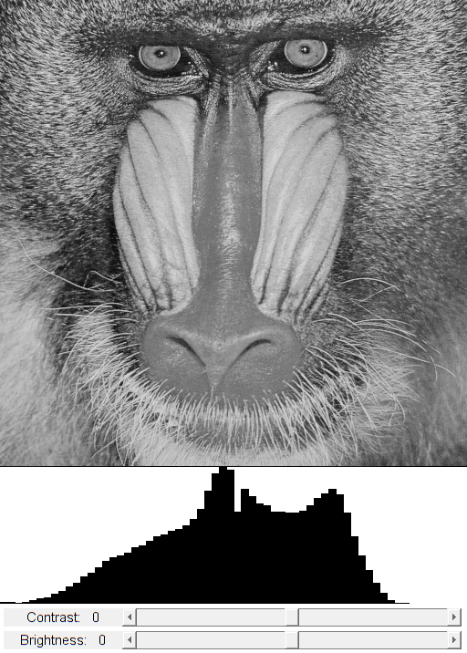

Intensity Image Histogram
This program demonstrates the use of cv.calcHist for histogram creation.
Sources:
function varargout = hist_demo_gui(im) % load source image if nargin < 1 im = fullfile(mexopencv.root(),'test','img001.jpg'); src = cv.imread(im, 'Grayscale',true); elseif ischar(im) src = cv.imread(im, 'Grayscale',true); else src = im; end % we expect a grayscale image if size(src,3) == 3, src = cv.cvtColor(src, 'RGB2GRAY'); end % create the UI h = buildGUI(src); if nargout > 0, varargout{1} = h; end end function onChange(~,~,h) %ONCHANGE Event handler for UI controls % retrieve current values from UI controls histSize = 64; brightness = round(get(h.slid(1), 'Value')); contrast = round(get(h.slid(2), 'Value')); set(h.txt(1), 'String',sprintf('Brightness: %3d',brightness)); set(h.txt(2), 'String',sprintf('Contrast: %3d',contrast)); % brightness/contrast adjusted image % algorithm by Werner D. Streidt % <http://visca.com/ffactory/archives/5-99/msg00021.html> if contrast > 0 delta = 127 * contrast/100; a = 255 / (255 - delta*2); b = a * (brightness - delta); else delta = -128 * contrast/100; a = (256 - delta*2) / 255; b = a * brightness + delta; end dst = uint8(double(h.src) * a + b); % calculate 1D histogram of grayscale image if true histo = cv.calcHist(dst, [0 256], 'HistSize',histSize, 'Uniform',true); else histo = cv.calcHist(dst, linspace(0,256,histSize+1)); end histo = cv.normalize(histo, 'NormType','MinMax', ... 'Alpha',0, 'Beta',h.hsz(1), 'DType','single'); % draw histogram bars out = ones(h.hsz, 'uint8') * 255; binW = round(h.hsz(2) / histSize); % width of bin bars for i=1:histSize out = cv.rectangle(out, ... round([(i-1)*binW, h.hsz(1)]), ... round([i*binW, h.hsz(1)-histo(i)]), ... 'Color',0, 'Thickness','Filled'); end % show results set(h.img(1), 'CData',out); set(h.img(2), 'CData',dst); drawnow; end function h = buildGUI(img) %BUILDGUI Creates the UI % parameters brightness = 0; contrast = 0; sz = size(img); sz(2) = max(sz(2), 320); % minimum figure width hsz = [150 sz(2)]; % size [h,w] of histogram output image out = ones(hsz, 'uint8') * 255; % build the user interface (no resizing to keep it simple) h = struct(); h.src = img; h.hsz = hsz; h.fig = figure('Name','Histogram', ... 'NumberTitle','off', 'Menubar','none', 'Resize','off', ... 'Position',[200 200 sz(2) sz(1)+hsz(1)+55-1]); if ~mexopencv.isOctave() %HACK: not implemented in Octave movegui(h.fig, 'center'); end h.ax(1) = axes('Parent',h.fig, ... 'Units','pixels', 'Position',[1 55 sz(2) hsz(1)]); h.ax(2) = axes('Parent',h.fig, ... 'Units','pixels', 'Position',[1 hsz(1)+55 sz(2) sz(1)]); if ~mexopencv.isOctave() h.img(1) = imshow(out, 'Parent',h.ax(1)); h.img(2) = imshow(img, 'Parent',h.ax(2)); else %HACK: https://savannah.gnu.org/bugs/index.php?45473 axes(h.ax(1)); h.img(1) = imshow(out); axes(h.ax(2)); h.img(2) = imshow(img); end h.txt(1) = uicontrol('Parent',h.fig, 'Style','text', ... 'Position',[5 5 130 20], 'FontSize',11, ... 'String',sprintf('Brightness: %3d',brightness)); h.txt(2) = uicontrol('Parent',h.fig, 'Style','text', ... 'Position',[5 30 130 20], 'FontSize',11, ... 'String',sprintf('Contrast: %3d',contrast)); h.slid(1) = uicontrol('Parent',h.fig, 'Style','slider', ... 'Position',[135 5 sz(2)-135-5 20], 'Value',brightness, ... 'Min',-100, 'Max',100, 'SliderStep',[1 10]./200); h.slid(2) = uicontrol('Parent',h.fig, 'Style','slider', ... 'Position',[135 30 sz(2)-135-5 20], 'Value',contrast, ... 'Min',-100, 'Max',100, 'SliderStep',[1 10]./200); % hook event handlers set(h.slid, 'Callback',{@onChange,h}, ... 'Interruptible','off', 'BusyAction','cancel'); onChange([],[],h); end